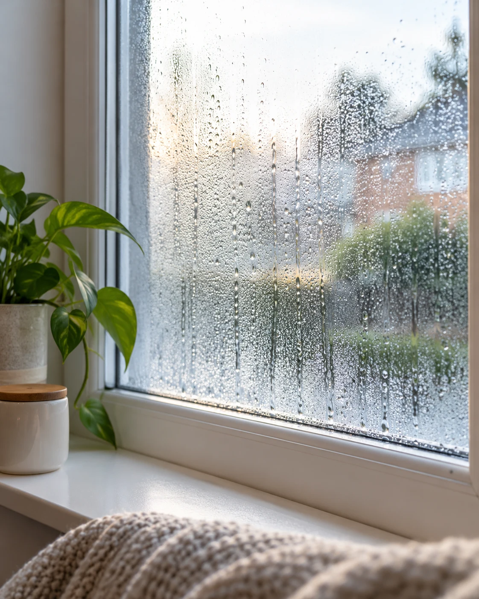
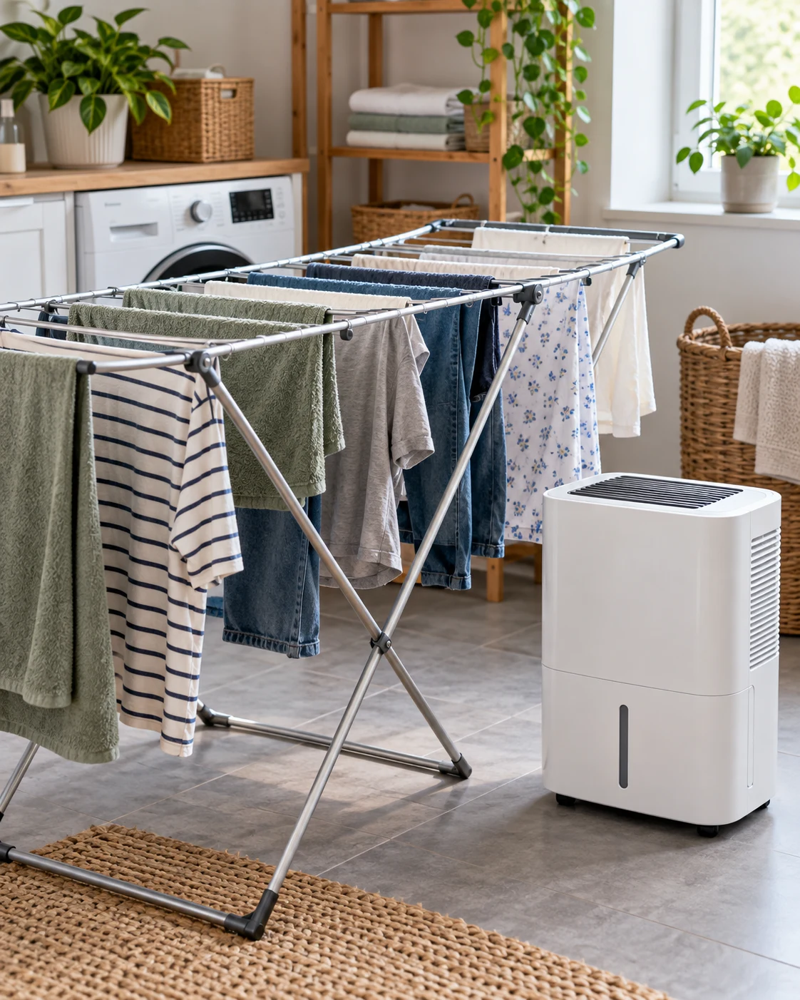
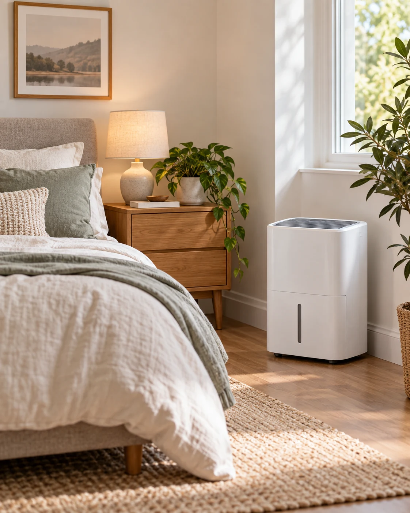
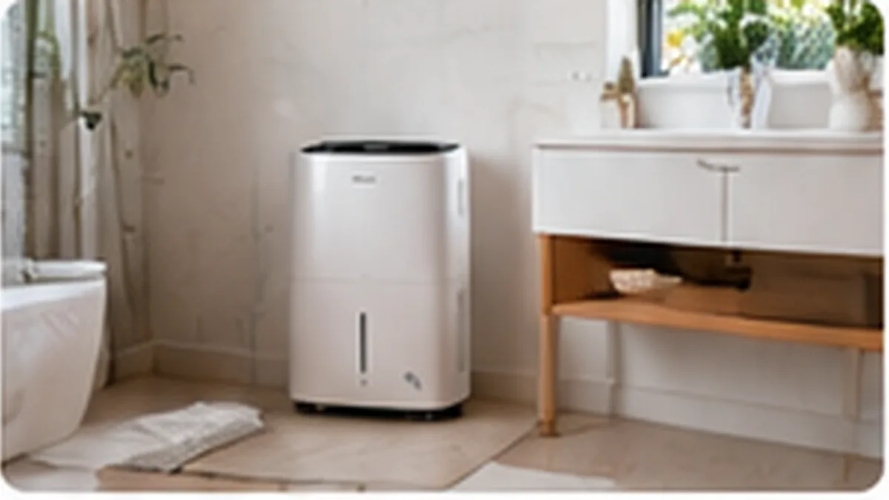

Condensación frecuente
Si los cristales amanecen mojados, especialmente en épocas frías, y la humedad relativa es alta, reducir humedad ambiental puede ayudar a disminuir la condensación.
Ventanas mojadas por la mañana, olor a humedad, ropa que tarda días en secarse o una habitación que siempre parece húmeda. Un deshumidificador puede ayudar mucho, pero solo si el problema y el aparato encajan.
Un deshumidificador reduce la humedad del aire, pero no repara una tubería que pierde, una filtración exterior ni un problema de aislamiento. Por eso conviene empezar por el origen antes de mirar litros, vatios o modos inteligentes.
Cuando el problema sí es exceso de humedad ambiental, la elección cambia según temperatura, tamaño de la estancia, cantidad de vapor que generamos, ruido tolerable y si queremos usarlo también para secar ropa.
La condensación y la humedad ambiental pueden mejorar al retirar vapor de agua del aire. Las filtraciones o daños constructivos necesitan abordar su causa.

La condensación aparece cuando aire húmedo entra en contacto con una superficie suficientemente fría. Un deshumidificador puede reducir el vapor disponible, pero conviene revisar también ventilación, aislamiento y posibles entradas de agua.
Si los cristales amanecen mojados, especialmente en épocas frías, y la humedad relativa es alta, reducir humedad ambiental puede ayudar a disminuir la condensación.
Tender en interior añade bastante humedad al ambiente. Un deshumidificador puede acelerar el secado al retirar parte de ese vapor, sobre todo en una habitación cerrada.
Sensación de humedad, olor característico y valores altos en un higrómetro son señales para investigar ventilación, aislamiento y posible exceso de vapor en la vivienda.
Si hay una gotera, una fuga de tubería, humedad ascendente desde el suelo o entrada de agua por fachada, el deshumidificador puede retirar parte del agua del aire, pero no solucionará el origen. En esos casos, diagnosticar y reparar la causa es prioritario.
El formato de la máquina determina cuánto puede extraer, a qué temperatura trabaja mejor y cuánto sentido tiene para una habitación real.
Aspira el aire y lo hace pasar por una superficie fría para que parte del vapor condense en agua. Es el sistema habitual en aparatos domésticos de mayor capacidad y suele ser el punto de partida para dormitorios, salones, lavanderías y viviendas con humedad relevante.
Utiliza un material que absorbe humedad y después se regenera con calor. Mantiene mejor su utilidad a bajas temperaturas, por lo que puede tener sentido en garajes, sótanos o segundas residencias frías. A cambio, el consumo puede ser superior según el diseño.
Los mini deshumidificadores termoeléctricos son compactos y pueden resultar silenciosos, pero su capacidad de extracción suele estar muy por debajo de la de un equipo de compresor. Tienen más sentido en espacios pequeños que como solución principal para una vivienda.
La capacidad anunciada suele expresarse en litros por 24 horas. El problema es que esa cifra depende mucho de la temperatura y de la humedad del ensayo. Un aparato anunciado como 20 L/día no tiene por qué recoger 20 litros cada día en tu dormitorio en invierno.
Por ejemplo, fabricantes como De'Longhi publican la capacidad máxima de varios modelos bajo condiciones de 30 °C y 80 % de humedad relativa. Son condiciones útiles para comparar dentro de una ficha técnica, pero bastante distintas de muchas viviendas reales.
Una estancia grande contiene más aire y suele exigir más capacidad, pero los metros no explican por sí solos la cantidad de humedad.
Los equipos de refrigeración pierden rendimiento cuando baja mucho la temperatura; aquí la tecnología elegida puede importar tanto como el tamaño.
Secar ropa, ducharse, cocinar o vivir varias personas en la misma vivienda aumenta el vapor que el aparato tendrá que retirar.
Un equipo puede trabajar durante muchas horas al principio y reducir sus ciclos cuando el higrostato detecta que se ha alcanzado la humedad objetivo.

En una lavandería pesan extracción y caudal de aire; en un dormitorio, el ruido y las luces; en un baño, además, importa respetar las condiciones de seguridad eléctrica del fabricante.

Prioriza ruido, luces del panel y control automático de humedad.

Puede ayudar tras la ducha, siempre respetando las distancias y condiciones eléctricas del manual.
Extracción, caudal de aire y funcionamiento continuo importan más que una app vistosa.
Si hace frío, revisa especialmente el rango de trabajo y si una tecnología desecante encaja mejor.
Una ficha técnica puede tener veinte funciones. Estas son las que más suelen afectar a capacidad, comodidad y coste de uso.
Útil para comparar, siempre entendiendo bajo qué condiciones se declara.
Permite fijar una humedad objetivo y evita tener que encender y apagar el aparato manualmente todo el tiempo.
Especialmente importante en dormitorios, despachos o cuando el aparato funcionará muchas horas.
No indica por sí sola la eficiencia, pero ayuda a estimar el coste cuando se combina con horas reales de funcionamiento.
Cuanto más pequeño, más veces habrá que vaciarlo si no utilizas drenaje continuo.
Muy útil para funcionamiento prolongado si existe un desagüe adecuado y la instalación respeta la caída necesaria.
Ayuda a mover el aire de la habitación y gana importancia cuando queremos secar ropa o tratar un espacio grande.
Peso, ruedas y asas importan bastante si vas a mover el mismo aparato entre distintas habitaciones.
OCU sitúa como referencia doméstica un intervalo aproximado del 40 % al 60 % de humedad relativa. El valor práctico puede variar según vivienda, temperatura y problema concreto.
Si la humedad se mantiene alta, conviene investigar ventilación, generación de vapor, superficies frías y posibles entradas de agua.
Es una referencia doméstica útil para entender por qué un higrostato regulable puede tener más valor que dejar el aparato funcionando sin objetivo.
No tiene sentido intentar bajar indefinidamente la humedad. El objetivo es controlar el exceso, no convertir la habitación en un ambiente innecesariamente seco.
Estos errores hacen que un aparato aparentemente barato termine siendo insuficiente, incómodo o más caro de usar.
Un Peltier compacto puede ser útil en poco espacio, pero no debemos compararlo directamente con un compresor doméstico de mayor capacidad.
Dos aparatos con una cifra parecida pueden diferir en ruido, caudal, consumo, depósito y comportamiento con bajas temperaturas.
Si el depósito se llena varias veces y resulta incómodo vaciarlo, probablemente acabarás usando menos el equipo. El drenaje continuo puede cambiar mucho la experiencia.
Si hay filtración, fuga o humedad ascendente, retirar vapor del aire no sustituye una reparación adecuada.
La diferencia entre un aparato tolerable y uno molesto puede importar más que una función inteligente que apenas usarás.
Wi-Fi, aplicaciones o temporizadores pueden ser útiles, pero primero deben estar bien resueltos capacidad, control de humedad y drenaje.
El mejor deshumidificador no es el que anuncia la cifra más alta, sino el que puede mantener bajo control la humedad de tu espacio sin ser una molestia diaria.
Condensación no es lo mismo que filtración o fuga.
Compresor para uso doméstico general; desecante si el frío manda.
Comprueba también temperatura, ruido, caudal y condiciones de ensayo.
Depósito, drenaje, higrostato, ruedas y ruido condicionan el uso real.
Respuestas cortas para situarte antes de entrar en comparativas o modelos concretos.
Como referencia práctica, OCU sitúa el intervalo óptimo aproximadamente entre el 40 % y el 60 % de humedad relativa. No hace falta perseguir el valor más bajo posible.
Depende de la estancia, temperatura y cantidad real de humedad. Un 20 L/día tiene mayor capacidad nominal, pero conviene revisar bajo qué condiciones se ha medido y cuánto ruido, potencia y caudal ofrece.
Hay modelos pensados para funcionar durante muchas horas, pero hay que seguir siempre las instrucciones del fabricante. Para un dormitorio importan especialmente ruido, luces, temperatura de trabajo y control automático de humedad.
Sí puede ayudar a reducir el tiempo de secado al retirar humedad del aire. Algunos modelos incorporan modos específicos que aumentan ventilación y deshumidificación durante ese uso.
No elimina por sí solo el moho ya existente ni repara la causa que lo ha provocado. Reducir la humedad persistente puede formar parte de la solución, pero el origen de la humedad y el material afectado deben tratarse de forma adecuada.
Debe colocarse siguiendo el manual del modelo, con entradas y salidas de aire sin bloquear y sobre una superficie estable. Las distancias a paredes y muebles varían según el diseño.
Priorizamos documentación técnica, organismos y fuentes que permiten verificar cómo funciona la tecnología y qué límites tiene.
La siguiente guía del clúster separará tamaño de estancia, temperatura, humedad y uso para entender cuándo tiene sentido subir de capacidad.